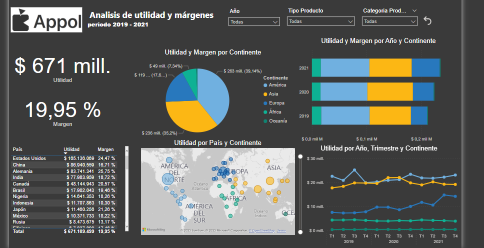

Manuel Calvache Morales
Data Analyst & Business Intelligence
Acerca de mí

Como apasionado de la tecnología y su rápido avance, me fascina sumergirme en el mundo de los lenguajes de programación y la ciencia de datos. Esta exploración me ha permitido comprender cómo funcionan nuestras actividades cotidianas y cómo podemos aprovechar estos conocimientos para marcar la diferencia en nuestro entorno.
Estoy comprometido con el aprendizaje continuo y estoy constantemente actualizando mis habilidades para mantenerme al día con las últimas tendencias y tecnologías en el campo del análisis de datos.
Estoy emocionado por la oportunidad de colaborar con equipos talentosos y contribuir al éxito empresarial a través de la aplicación estratégica de datos. Si estás interesado en conocer más sobre mi experiencia y cómo puedo agregar valor a tu organización, no dudes en descargar mi CV y ponerte en contacto conmigo. Estoy ansioso por compartir ideas y explorar nuevas oportunidades.
Descargar CVConocimiento y Habilidades
- Excel
- SQL
- Python
- Visualizaciones en Power BI y Tableau
Otras Habilidades
- Adobe Photoshop
- Adobe Premiere
- Html y Css
Casos
Caso de estudio 1 : Proyecto de ventas de casas en California

Utilizando datos de ventas de casas en California se logra identificar las características que influyen en el precio.
- Proyecto de Kaggle realizado en Anaconda y transformado con Python y varias librerias
Ver en GitHubCaso de estudio 2: Proyecto APPOL
Por medio del Dashboard, buscamos el motivo por el cual no se cumplió la meta de margen en los dos primeros años.
- Proyecto ficticio realizado completamente en Power BI y tranformado con PowerQuery y lenguaje DAX.
Nota: Abrir la pagina del informe junto a la del Dashboard para ver todo el análisi del caso.
Dashboard Informe